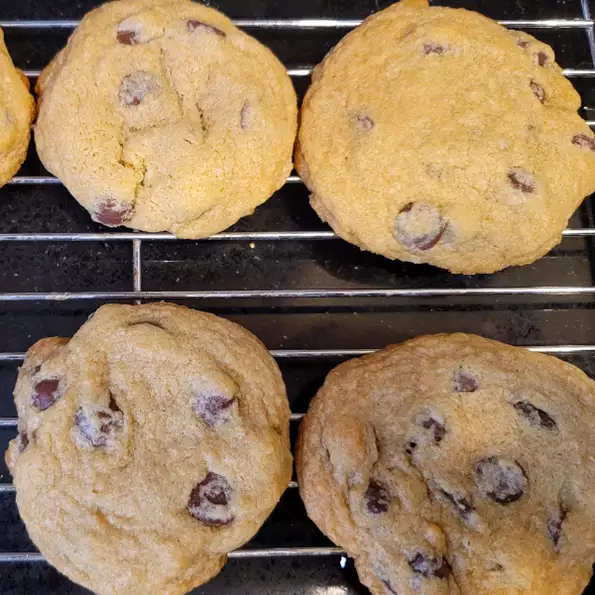

Chocolate Chip Cookies

Description
These cookies are a crowd pleaser, and easily modified! To keep cookies from cooking flat,
make sure to cream the butter with the sugar (don't melt your butter!) And if you have time,
refrigerate the dough before baking, and between batches.
Ingredients
- 1/2 cup butter, softened
- 1/4 cup white sugar
- 1 egg
- 1/2 teaspoon vanilla extract
- 1 cup all-purpose flour
- 1/2 teaspoon baking soda
- 1 cup semisweet chocolate chips
- 1/2 cup coarsely chopped walnuts
Directions
- Preheat oven to 350 degrees F (175 degrees C)
- In a medium bowl, cream together the butter, white sugar and brown sugar until smooth. Beat in the egg, then stir in the vanilla.
Combine the flour and baking soda, stir into the creamed mixture. Fold in the chocolate chips and walnuts. Drop by rounded ice cream
scoops onto a cookie sheet, and press down slightly to flatten. Cookies should be about 2 inches apart.
- Bake for 11 to 14 minutes in oven. Cool for 5 minutes before removing to wire rack to cool completely.
Back to Home